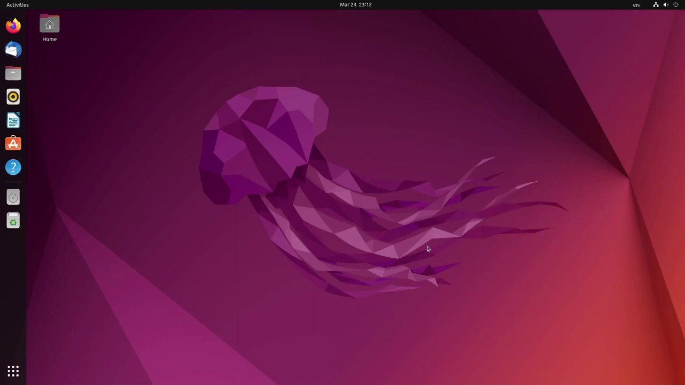

Ubuntu is a Linux distribution based on Debian and composed mostly of free and open-source software. Ubuntu is officially released in three editions: Desktop, Server, and Core for Internet of things devices and robots. All the editions can run on the computer alone, or in a virtual machine. Ubuntu is a popular operating system for cloud computing, with support for OpenStack. Ubuntu's default desktop has beenGNOME since version 17.10
Ubuntu is released every six months, with long-term support (LTS) releases every two years. As of 21 April 2022, the most recent long-term support release is 22.04 ("Jammy Jellyfish").
| Version | Code Name | Release Date | End of Support | Security support end |
|---|---|---|---|---|
| 14.04 LTS | Trusty Tahr | 2014-04-17 | 2019-04 | 2034-04 |
| 16.04 LTS | Xenial Xerus | 2016-04-21 | 2021-04 | 2026-04 |
| 18.04 LTS | Bionic Beaver | 2018-04-26 | 2023-04 | 2028-04 |
| 20.04 LTS | Focal Fossa | 2020-04-23 | 2025-04 | 2030-04 |
| 22.04 LTS | Jammy Jellyfish | 2022-04-21 | 2027-04 | 2032-04 |

A default installation of Ubuntu contains a wide range of software that includes:
Many additional software packages that are no longer installed by default, such as:
Cross-distribution snap packages and flatpaks are also available, that both allow installing software, such as some of Microsoft's software, in most of the major Linux operating systems (such as any currently supported Ubuntu version and in Fedora). The default file manager is GNOME Files, formerly called Nautilus.
To update Ubuntu, use the following commands in the terminal:
sudo apt update
sudo apt upgrade
sudo apt full-upgrade
You can also add additional programs via the command line. For example: sudo apt install vlc will install the vlc program. Programs can be removed in the same fashion. For instance: sudo apt remove vlc will remove the vlc program.